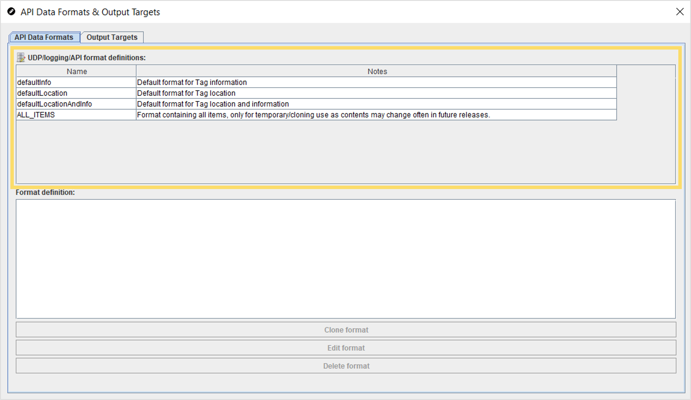
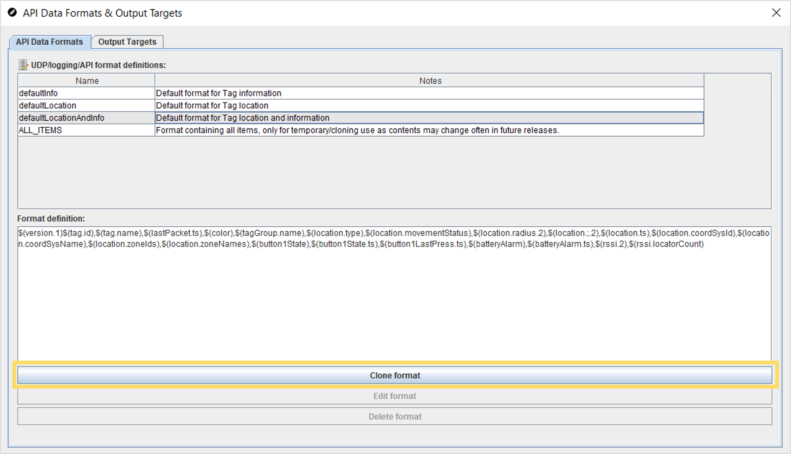
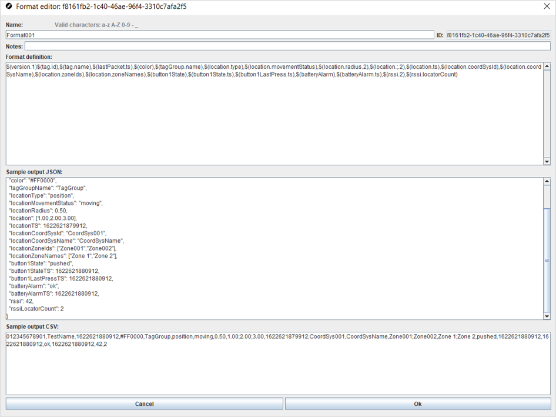

API Data Formats & Output Targets
The API Data Formats & Output Targets editor allows you to define the data exposed via the Quuppa API. This page describes the different default API data formats and how to customise them for your project.
For instructions on sending this data to external systems, see Create Output Targets. To refine the data before it is sent, see Location Data Filtering.
For detailed information about using the Quuppa API, please refer to our Quuppa Positioning Engine User Manual or the Quuppa API documentation available in the Quuppa Positioning Engine (QPE) web console.
Available default output formats
The default and custom formats are available in JSON and CSV.
For Tags:
These formats apply to tag output targets or the API endpoint
/getTagData?format=<name-of-your-format>
- DefaultInfo: Provides data points related to tag information, such as state, group, battery level, button state, acceleration data, TX power, and developer-specific data. Use this format to monitor the status and health of tags within a project.
- DefaultLocation: Provides data points related to tag positioning information, such as location estimates, coordinate systems, tracking areas, and zones. Use this format to visualise on a map how tags move within a project space.
- DefaultLocationAndInfo: Provides a combination of tag information and positioning information. This includes all status data (e.g. battery, button) and location data (e.g. estimates, zones). Use this format when you require both movement tracking on a map and event-based actions visualised in the map view.
- ALL_ITEMS: Provides all available data points for a tag. This format is a template for creating customisations based on specific project requirements and is not intended for direct use.
For Locator Data:
These formats apply to Locator output targets or the API endpoint /getLocatorData?format=<name-of-your-format>
- defaultLocatorInfo: Provides all Locator-related data points. Use this format to monitor the hardware status and configuration details of the Locators in your project.
- legacyLocatorInfo: Provides all Locator-related data points in the legacy formatting from the /getLocatorInfo API response.
For Positioning Engine Data:
This format applies to Quuppa Positioning Engine (QPE) output targets or the API endpoint /getPEData?format=<name-of-your-format>
-
defaultPEInfo: Provides all data points related to Positioning Engine. Use this format to monitor the performance and operational state of the QPE.
Edit API Data Formats
The types of data that you want to expose via the Quuppa API depend on the specific requirements of your project. The API Data Formats & Output Targets editor allows you to use default API format definitions (DefaultInfo, DefaultLocation, DefaultLocationAndInfo and ALL_ITEMS) as templates to customise for your project. JSON and CSV outputs are available for all output formats.
The syntax for creating custom formats uses $(object.field) notation, which is documented for all available fields in Quuppa API documentation. All available fields are also included in the ALL_ITEMS format, which can be used as a starting point for your custom target.
All formats must start with the $(version.1) specifier to define the API version and the data type. Available options include:
-
$(version.1.tag): for tag outputs -
$(version.1.locator): for Locator outputs -
$(version.1.pe): for Positioning Engine outputs -
$(version.1): defaults to tag output
To edit the format definitions
- Open the project in the Quuppa Site Planner (QSP).
- In the menu bar at the top, select Project > API Data Formats. (Alternatively, access the editor via the object tree on the left by clicking API Data Formats. This opens the API Data Formats & Output Targets editor to the API Data Formats tab.
- In the UDP/logging/API format definitions table, select the
default definition you want to edit. For more information about the available
options, see the Available default output
formats section above.

- Copy the default format by clicking Clone format button
under the definitions table. This opens a new format editor window.

Tip:We recommend cloning the format that you intend to use, even if you do not plan to edit the format string. Because Quuppa API is constantly being improved, default formats may change with future software releases. Cloning ensures your specific format remains consistent even after a software update. - Enter a name for the new format and edit the format string
as needed. The window displays sample output strings in both JSON and
CSV, so you can check the output.

- Click OK at the bottom of the window to save the edits.
Available Transformations for data
You can apply certain transformations to the output data to modify its format. The following operators are available:
| Operator | Example usage | Example output | Data types | Description |
|---|---|---|---|---|
| .A | $(location.,) |
[10.0,20.0,1.00] | lists | Delimiter for lists, mainly in CSV or custom formats (non-number character). |
| .abs | $(location.z.abs) |
z coordinate | Gives z coordinate as absolute value (in reference to the ground level) instead of the default relative value (in reference to the coordinate system floor). | |
| .as.xxx | $(tag.name.as.tagname) |
any |
Changes the key in JSON. In CSV or Custom formats can be used both as key and separator. For example,
|
|
| .decBytes | $(developerSpecificData.decBytes) |
0 16 256 | byte array | Shows the bytes as 0 16 256. |
| .hex | $(developerSpecificData.hex) |
0x000fff | byte array | Shows the bytes as 0x000fff. |
| .hexBytes | $(developerSpecificData.hexBytes) |
0x00 0x0f 0xff | byte array | Shows the bytes as 0x00 0x0f 0xff. |
| .id | $(developerSpecificData.id) |
000fff | byte array | Shows the bytes as 000fff. |
| .iso | $(location.ts.iso) |
2025-09-29T09:17:10.864+03:00[Europe/Kiev] | Date | Converts unix timestamp to ISO Date format, current time zone. |
| .isoutc | $(location.ts.isoutc) |
2025-09-29T06:17:53.775Z | Date | Converts unix timestamp to ISO Date format, UTC. |
| .N | $(location.2) |
[10.0;20.0;1.00] | float | Specifies number of decimals for a float. |
| .timestamp | $(location.ts.timestamp) |
Date | Timestamp as long, default for type Date. |
Customising the message using Custom (CSV / Custom) formatting for data
The CSV / Custom format type allows you to fully define the separator characters or static parts for your message. The dynamic parts are injected into the message using the $(object.field) notation.
Example:
Format definition:
$(version.1.tag){
“Message” : ”Hello $(tag.name)!”
}Output with type CSV / Custom:
{
“Message”: ”Hello TestName!”
}